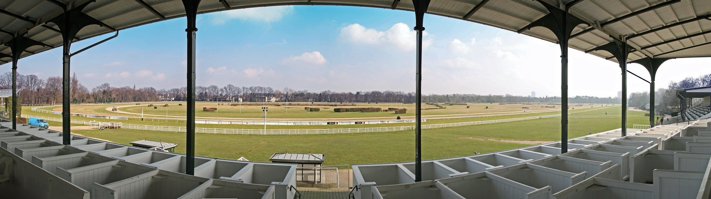
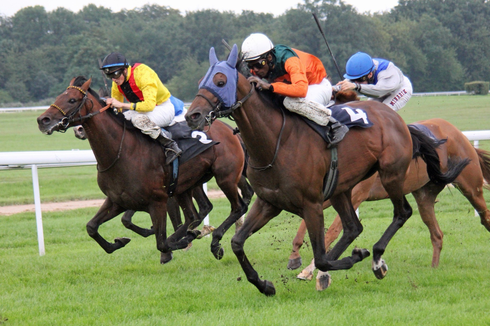
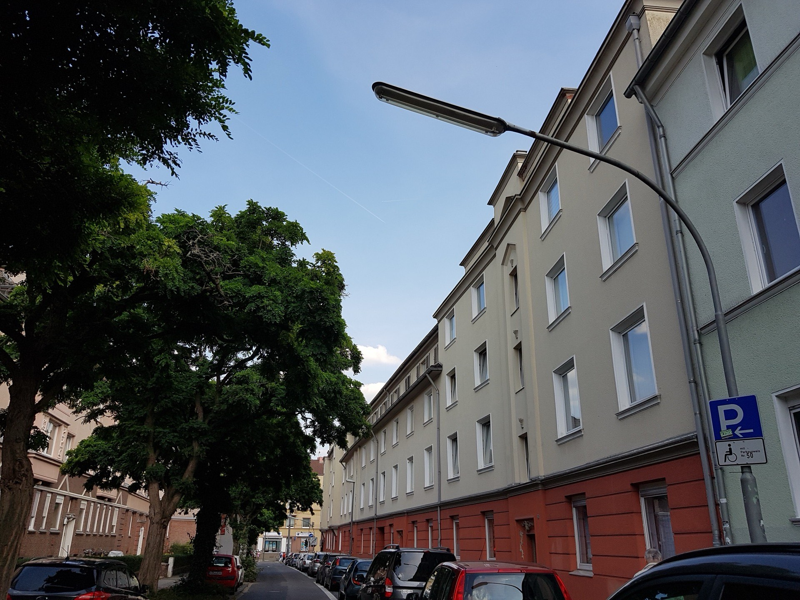

Immobilie in Köln-Weidenpesch verkaufen
2025 war jede zweite verkaufte Wohnung im Stadtteil ein Neubau. Das gibt es sonst fast nirgends in Köln — und es verändert, gegen wen Sie antreten, wenn Sie eine Bestandswohnung anbieten.
- Verkäufe 2025
- 104 53 Neubau · 51 Bestand
- Bestand
- 3.578 €/m² Durchschnitt aus 51 Verträgen
- Neubau
- 5.819 €/m² 62,6 % mehr, aus 53 Verträgen
Was ist Ihre Immobilie hier wert? Kostenlos, unverbindlich, in sechs Schritten.

51 Prozent Neubau — das gibt es in Köln fast nirgends
Der Grundstücksmarktbericht 2026 wertet für Weidenpesch 104 beurkundete Wohnungsverkäufe des Jahres 2025 aus. 53 davon waren Neubauten, 51 Weiterverkäufe aus dem Bestand. Von 18 Kölner Stadtteilen mit nennenswertem Neubauhandel erreichen nur zwei einen höheren Anteil: Raderberg und Ehrenfeld.
Zum Einordnen: In Nippes, dem Nachbarstadtteil, stehen 25 Neubauverkäufen 141 Weiterverkäufe gegenüber — dort macht der Neubau 15 Prozent des Marktes aus. In Weidenpesch ist es die Hälfte.
Anteil Neubau an allen verkauften Wohnungen, 2025
Nur Stadtteile mit mindestens fünf Neubaufällen · Grundstücksmarktbericht 2026
Was das für einen Bestandsverkauf bedeutet
Der Neubau kostete 2025 im Schnitt 5.819 Euro je Quadratmeter, der Bestand 3.578 — 62,6 Prozent Abstand. Bei einer Wohnung von 70 Quadratmetern sind das rechnerisch 407.000 gegenüber 250.000 Euro.
Viele Eigentümer lesen darin ein Problem. Es ist eher eine Arbeitsanweisung: Ihre Interessenten haben sich mit hoher Wahrscheinlichkeit auch Neubauwohnungen angesehen. Sie kennen also die Ausstattung, die dort selbstverständlich ist — Aufzug, Balkon, Stellplatz, aktueller Energiestandard. Wo Ihre Wohnung das nicht bietet, entsteht die Frage von selbst. Wo sie etwas bietet, das der Neubau nicht hat — mehr Fläche fürs Geld, gewachsene Nachbarschaft, alter Baumbestand vor dem Fenster —, muss es ausdrücklich benannt werden.
Eine Zahl relativiert den Abstand übrigens: Für die 407.000 Euro, die eine 70-Quadratmeter-Neubauwohnung kostet, bekommt man im Bestand rechnerisch 114 Quadratmeter. Das sind 44 Quadratmeter mehr — in einem Stadtteil, in dem 15,2 Prozent der Haushalte mit Kindern leben, ein Argument mit Gewicht.
Was gilt für Ihre Immobilie?
Die beiden Marktsegmente in Weidenpesch verlangen unterschiedliche Vorbereitung. Wählen Sie, worum es bei Ihnen geht.
3.578 €/m²Durchschnitt aus 51 Weiterverkäufen 2025
Ihre eigentliche Konkurrenz sind nicht die 51 anderen Bestandswohnungen, sondern die 53 Neubauten. Dagegen hilft kein niedrigerer Preis, sondern der Vergleich, den der Käufer ohnehin anstellt: mehr Fläche fürs selbe Geld, gewachsene Umgebung, oft größere Zimmer.
- Energieausweis, Heizungsalter und Fensterzustand vorab klären — im Neubau sind das keine Fragen
- Fehlt ein Aufzug oder Stellplatz, gehört das offen ins Exposé statt in die zweite Besichtigung
- Beschlossene Sanierungen der Eigentümergemeinschaft und Höhe der Rücklage bereithalten
5.819 €/m²Durchschnitt aus 53 Neubauverkäufen 2025
Wenn Sie eine erst kürzlich gekaufte Neubauwohnung wieder abgeben, treten Sie gegen die noch laufenden Projekte an — und gegen deren Musterwohnungen und Bauträgerkonditionen. Der Weiterverkauf einer Neubauwohnung erzielt in aller Regel nicht denselben Preis wie der Erstverkauf.
- Prüfen, ob Restansprüche gegen den Bauträger bestehen und wie lange die Gewährleistung läuft
- Teilungserklärung, Aufteilungsplan und Protokolle der Eigentümerversammlungen zusammenstellen
- Bei Verkauf innerhalb von zehn Jahren die steuerliche Seite vorab klären lassen
900–1.240 €/m²Bodenrichtwert, fünf Zonen, Median 1.130
Für Häuser weist der Grundstücksmarktbericht in Weidenpesch keinen eigenen Durchschnitt aus — es werden zu wenige gehandelt. Die Bewertung läuft deshalb über das Gesamtobjekt, und der Bodenwert ist dabei der Ausgangspunkt. Bei 300 Quadratmetern Grundstück liegt er je nach Zone zwischen 270.000 und 372.000 Euro.
- Bodenrichtwertzone anhand der Adresse bestimmen, nicht über den Stadtteilmittelwert
- Bebaubarkeit und Geschossflächenzahl prüfen — bei 51 Prozent Neubauanteil ist die Nachfrage nach Bauland real
- Bei einem sanierungsbedürftigen Haus die Abrissvariante mitrechnen lassen
Alle Werte sind Durchschnitte aus beurkundeten Kaufverträgen des Jahres 2025 beziehungsweise amtliche Bodenrichtwerte zum 1. Januar 2026 — keine Bewertung Ihrer Immobilie. Was Ihr Objekt erzielen kann, klärt die kostenlose Bewertung.
Ein Drittel des Stadtteils ist Rennbahn und Friedhof
Weidenpesch hat einen Erholungsflächenanteil von 37,7 Prozent — der zweithöchste Wert aller 86 Kölner Stadtteile, nach Klettenberg mit 42,3. Im Stadtmittel sind es 11,5 Prozent. Zwei Anlagen erklären das fast vollständig.
Die Galopprennbahn entstand 1897 und war die erste Sportanlage der damals rasch wachsenden Stadt. Der ein Jahr zuvor gegründete Kölner Renn-Verein ist bis heute Hausherr über die 55 Hektar des Weidenpescher Parks. Der Nordfriedhof, eröffnet am 18. Mai 1896 auf dem Gelände einer ehemaligen Kiesgrube, kam mit ursprünglich 28 Hektar hinzu; die Stadt führt ihn heute als Landschaftsschutzgebiet mit Parkcharakter.

Für den Wohnungsmarkt hat das zwei gegenläufige Folgen. Auf der einen Seite: Bauland ist knapp. Wo ein Drittel der Fläche dauerhaft belegt ist, bleibt wenig übrig — was erklärt, warum die wenigen Neubauprojekte den Markt so stark prägen und warum sie zu Preisen verkauft werden, die 62,6 Prozent über dem Bestand liegen.
Auf der anderen Seite: Wer hier wohnt, wohnt am Grün. Bei einer durchschnittlichen Wohnung von 69,3 Quadratmetern und 38,5 Quadratmetern Wohnfläche je Einwohner — beides etwas unter dem Kölner Mittel — ist die Entfernung zu Park und Rennbahn ein Ausgleich, der sich beziffern lässt. In Gehminuten, nicht als Floskel: Diese Angabe gehört in jedes Exposé hier.
Der Bestand stammt aus zwei Schüben

Weidenpesch hieß bis 1952 amtlich „Merheim" und wurde 1888 nach Köln eingemeindet. Umbenannt wurde der Stadtteil aus einem sehr praktischen Grund: Zu viele Postsendungen landeten im rechtsrheinischen Merheim. Den neuen Namen lieferte der Weiden Paecherhof, ein Hof des Stifts St. Gereon.
Gewachsen ist der Stadtteil in zwei Wellen. In den 1920er und 1930er Jahren entstanden die Wohnsiedlungen an Mollwitz-, Lobositz-, Zorndorf- und Roßbachstraße, in den 1950er Jahren folgte der nächste Schub. Beides bestimmt den heutigen Bestand: solide gebaute, kompakte Wohnungen mit oft gutem Schnitt, aber Haustechnik und Dämmung auf dem Stand ihrer Zeit.
Das ist der Punkt, an dem sich der Verkauf entscheidet. Bei 5,6 Prozent geförderten Wohnungen liegt Weidenpesch nah am Kölner Wert von 6,2 — der Stadtteil ist sozial gemischt und preislich zugänglich. Käufer sind entsprechend preisbewusst und rechnen die Sanierungskosten mit. Wer Heizung, Fenster und Dachzustand belegen kann, verhandelt aus einer anderen Position als jemand, der auf Nachfragen schätzen muss.
Das Durchschnittsalter liegt bei 44,3 Jahren gegenüber 42,7 in Köln, der Anteil der Einpersonenhaushalte bei 55,9 Prozent gegenüber 51,9. Der Stadtteil ist also etwas älter und etwas kleinteiliger bewohnt als der Kölner Schnitt — was Zwei- und Dreizimmerwohnungen zum Kern der Nachfrage macht.
Alle Zahlen auf einen Blick
Amtliche Werte — Quellen und Methodik.
Warum 53 Neubauverkäufe und nur 15 neue Wohnungen?
Beide Zahlen stehen in amtlichen Quellen und widersprechen sich nicht — sie messen Verschiedenes. Der Grundstücksmarktbericht zählt Kaufverträge im Jahr der Beurkundung: Wer 2025 eine Neubauwohnung kauft, taucht 2025 auf, auch wenn das Haus erst 2026 oder 2027 fertig wird. Die Wohnungsbestandsstatistik zählt dagegen fertiggestellte Wohnungen. Zwischen Kaufvertrag und Fertigstellung liegen bei Neubauprojekten regelmäßig ein bis drei Jahre.
Für Sie heißt das: Die 53 Verkäufe zeigen, was der Markt gerade aufnimmt — und dass in Weidenpesch derzeit erheblich mehr Neubau verkauft wird, als bereits fertig dasteht. Ein Teil Ihrer künftigen Konkurrenz ist also noch im Bau.
Richtwerte, kein Preisschild. Für Ihr Objekt zählt der Zustand im Detail — dafür rechnen wir kostenlos eine Wertindikation oder kommen persönlich vorbei.
Auch tätig im Stadtbezirk Nippes und Umgebung:
Was Eigentümer in Weidenpesch am häufigsten fragen
Für Bestandswohnungen lag der Durchschnitt 2025 bei 3.578 Euro je Quadratmeter, ermittelt aus 51 Weiterverkäufen. Bei einer Wohnung von 70 Quadratmetern sind das rechnerisch rund 250.000 Euro. Das ist ein Ausgangspunkt, kein Preisschild: Etage und Aufzug, Zustand, Grundriss, Balkon, Stellplatz, Hausgeld und Rücklage verschieben den Wert deutlich. Wichtig in Weidenpesch: Ihre Wohnung wird von Käufern mit Neubauten verglichen, weil die 2025 die Hälfte aller Verkäufe ausmachten.
Ja. Von 104 beurkundeten Wohnungsverkäufen des Jahres 2025 waren 53 Neubauten und 51 Weiterverkäufe aus dem Bestand. Das entspricht 51 Prozent — von 18 Kölner Stadtteilen mit nennenswertem Neubauhandel erreichen nur Raderberg und Ehrenfeld einen höheren Anteil. Zum Vergleich: Im Nachbarstadtteil Nippes sind es 15 Prozent. Für Bestandsverkäufer heißt das, dass die eigentliche Konkurrenz nicht die anderen Bestandswohnungen sind, sondern die Neubauprojekte.
Nein — der Abstand ist eher Ihr Argument. Für die 407.000 Euro, die eine 70-Quadratmeter-Neubauwohnung im Schnitt kostet, bekommt ein Käufer im Bestand rechnerisch 114 Quadratmeter. Das sind 44 Quadratmeter mehr. In einem Stadtteil, in dem 15,2 Prozent der Haushalte mit Kindern leben, wiegt Fläche schwer. Entscheidend ist, dass dieser Vorteil im Exposé steht und nicht vorausgesetzt wird. Umgekehrt sollten Sie die Punkte, bei denen der Neubau vorn liegt — Energiestandard, Aufzug, Stellplatz — offen ansprechen, statt sie in der Besichtigung aufkommen zu lassen.
Die beiden Zahlen messen Verschiedenes und widersprechen sich nicht. Der Grundstücksmarktbericht zählt Kaufverträge im Jahr der Beurkundung — wer 2025 eine Neubauwohnung kauft, erscheint 2025, auch wenn das Gebäude erst später fertig wird. Die Wohnungsbestandsstatistik zählt dagegen erst, was fertig dasteht — und weil dazwischen bei größeren Projekten mehrere Jahre liegen, laufen die beiden Zahlen auseinander. Praktisch heißt das: Ein Teil Ihrer künftigen Konkurrenz ist noch im Bau.
BORIS NRW weist zum 1. Januar 2026 fünf Wohnbauland-Zonen zwischen 900 und 1.240 Euro je Quadratmeter aus, der Median liegt bei 1.130. Die Spanne ist mit 38 Prozent für Kölner Verhältnisse moderat — in Junkersdorf etwa sind es 143 Prozent. Bei 300 Quadratmetern Grundstück liegt der rechnerische Bodenwert je nach Zone zwischen 270.000 und 372.000 Euro. Hinzu kommen Zuschnitt, Bebaubarkeit, Geschossflächenzahl und Baulasten. Angesichts des hohen Neubauanteils im Stadtteil ist die Nachfrage nach bebaubaren Grundstücken real.
Beide zusammen sind der Grund dafür, dass 37,7 Prozent der Stadtteilfläche Erholungsfläche sind — der zweithöchste Wert unter 86 Kölner Stadtteilen, im Stadtmittel sind es 11,5 Prozent. Das wirkt in zwei Richtungen. Bauland ist knapp, was die wenigen Neubauprojekte und ihre Preise erklärt. Und wer hier wohnt, wohnt am Grün: Der Weidenpescher Park umfasst 55 Hektar, der Nordfriedhof kam 1896 mit ursprünglich 28 Hektar hinzu und gilt heute als Landschaftsschutzgebiet mit Parkcharakter. Die Entfernung dorthin in Gehminuten gehört ins Exposé.
Nicht zwingend, aber Sie sollten den Zustand belegen können. Die Siedlungen an Mollwitz-, Lobositz-, Zorndorf- und Roßbachstraße entstanden in den 1920er und 1930er Jahren, ein zweiter Schub folgte in den 1950ern. Solche Wohnungen sind meist solide gebaut und gut geschnitten, aber Haustechnik und Dämmung sind auf dem Stand ihrer Zeit. Käufer in Weidenpesch sind preisbewusst und rechnen Sanierungskosten mit. Wer Heizungsalter, Fensterzustand und Dachsanierung mit Unterlagen belegt, verhandelt aus einer anderen Position als jemand, der schätzen muss. Ob sich eine Maßnahme lohnt, hängt immer davon ab, ob sie mehr einbringt als sie kostet.
Dann treten Sie gegen die noch laufenden Projekte an — samt Musterwohnung, Sonderwunschkatalog und Bauträgerkonditionen. Rechnen Sie damit, dass der Erstverkaufspreis nicht noch einmal erreichbar ist — der Bauträger verkauft nebenan dasselbe Produkt mit Garantie. Vorab klären sollten Sie, ob Restansprüche gegen den Bauträger bestehen und wie lange die Gewährleistung läuft; Teilungserklärung, Aufteilungsplan und Protokolle der Eigentümerversammlungen gehören zusammengestellt. Bei einem Verkauf innerhalb von zehn Jahren nach Anschaffung lohnt außerdem ein Blick auf die steuerliche Seite — das gehört zum Steuerberater.
Der Grundstücksmarktbericht bildet für Weidenpesch keinen eigenen Hausdurchschnitt — es werden zu wenige gehandelt. Ein Haus wird deshalb als Gesamtobjekt bewertet, und der Bodenwert ist der Ausgangspunkt: bei 300 Quadratmetern Grundstück je nach Zone zwischen 270.000 und 372.000 Euro. Dazu kommen Baujahr und Sanierungsstand, Energieträger, Zimmerzahl und Grundriss, Außenflächen und Stellplätze. Bei einem stark sanierungsbedürftigen Haus lohnt es, die Abrissvariante mitrechnen zu lassen — bei 51 Prozent Neubauanteil im Stadtteil gibt es dafür einen realen Markt.
Nein. Die Bewertungsanfrage ist kostenlos und unverbindlich. Durch die Anfrage entsteht kein Maklerauftrag.
Bildnachweis: Panorama der Galopprennbahn und Galopprennen: Superbass, CC BY-SA 3.0 · Roßbachstraße: Asperatus, CC BY-SA 4.0, beide über Wikimedia Commons. Marktdaten: Gutachterausschuss für Grundstückswerte in der Stadt Köln (Grundstücksmarktbericht 2026, Berichtsjahr 2025), BORIS NRW zum 1. Januar 2026, Stadt Köln – Amt für Stadtentwicklung und Statistik (Einwohner, Haushalte und Wohnungsbestand zum 31. Dezember 2025; Erholungsflächenanteil aus den Kölner Stadtteilinformationen). Angaben zu Rennbahn, Nordfriedhof und Stadtteilgeschichte nach Wikipedia und Stadt Köln. Keine Rechtsberatung.
Was ist Ihre Immobilie in Köln-Weidenpesch wert?
Unverbindliche Einschätzung, kostenfrei und vertraulich behandelt.